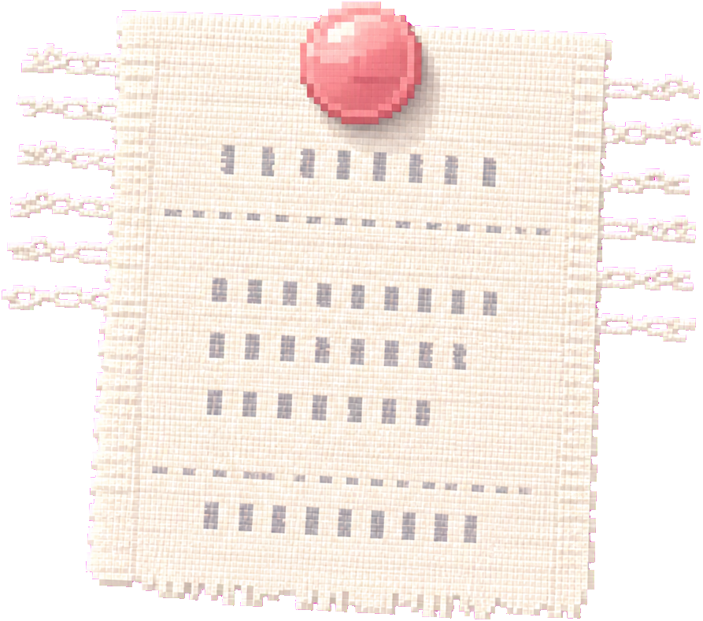
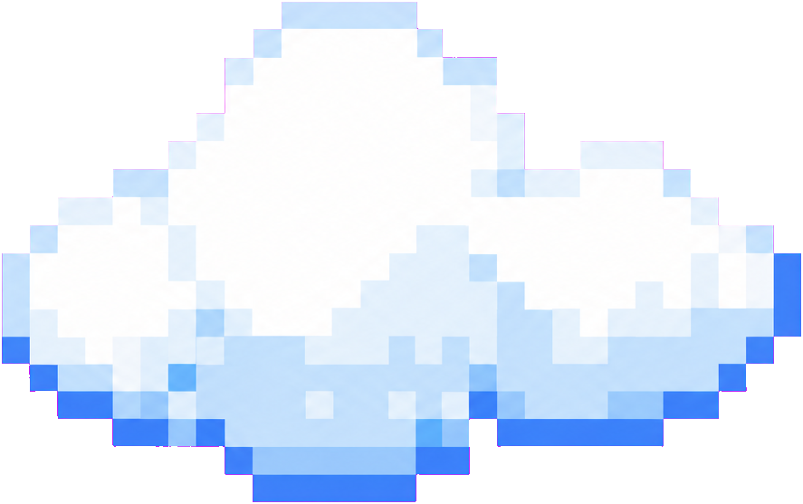
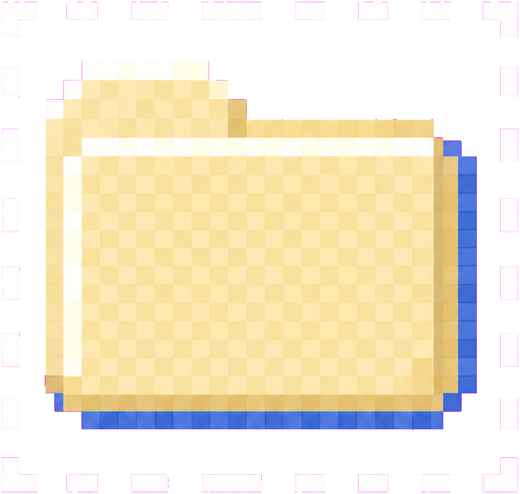
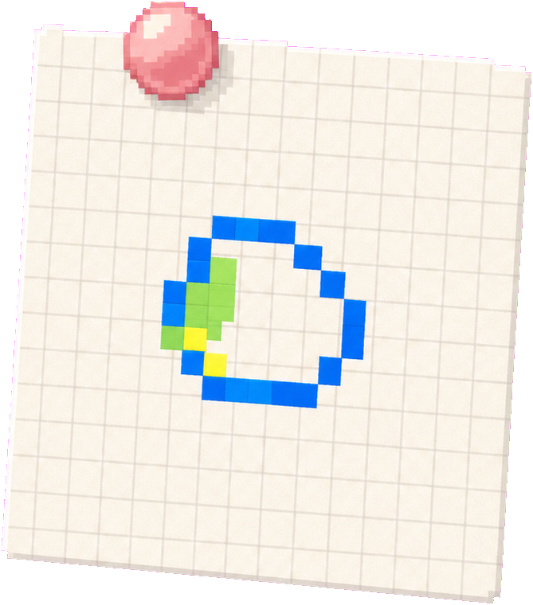
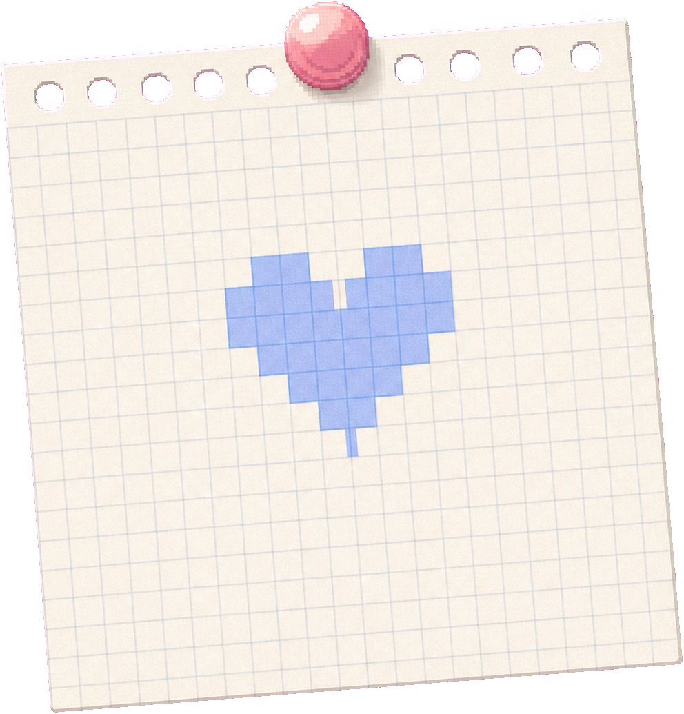
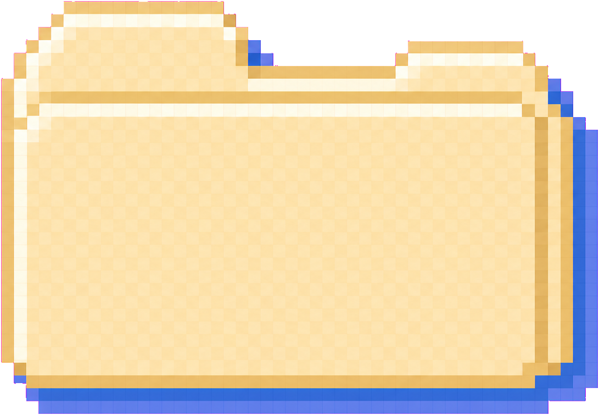

江南大学
数字媒体艺术设计
主修课程：CMF设计、设计心理学与用户研究、虚拟交互理论与实践、品牌策划设计
cyrus.exe
Cyrus沉睡中...
想法生成中...






CMF设计 / 交互设计
本人情绪稳定，具备良好的学习能力、动手能力和创新意识，善于思考，能独立完成分配的任务，具备良好的沟通表达、协调能力和团队合作意识，善于听取他人意见。
数字媒体艺术设计
主修课程：CMF设计、设计心理学与用户研究、虚拟交互理论与实践、品牌策划设计
数字媒体艺术设计
主修课程：数字建模、UI设计、动态画面设计、三维动画、数字媒体技术等
2025年米兰设计周中国高校设计学科优秀作品展全国决赛 一等奖
2025年未来设计师·全国高校数字艺术设计大赛江苏省 二等奖
2023年未来设计师·全国高校数字艺术设计大赛北京市 二、三等奖
2023年第16届中国大学生计算机设计大赛北京市 三等奖
2023年时报金犊奖旺旺集团IP周边商品设计奖 优秀奖
2023年时报金犊奖浩天装-最佳美术设计平面奖 优秀奖
2020-2024年北京工业大学全学年 校学习优秀奖
这个垃圾桶已经从主视觉中独立成可替换 PNG 图层，当前仍放在原位置。